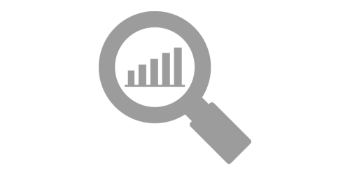

Analyse
Dette er en analyse av nettstedet. Her vurderes søkemotoroptimaliseringen og universell utforming, i tillegg blir det gjennomført en heuristisk vurdering. Jeg har valgt å bruke Google Lighthouse, Wave av Webaim og en fargekontrast måler fra Deque University som tekniske verktkøy. Samt Jakob Nielsen 10 generelle prinsipper for grensesnittdesign til den heuristiske vurderingen.
Google Lighthouse viste en Accessability på 92%. Bilde elementer har alt-attributter, flere av disse er tomme da de ikke er relevant for innhold og vil være forstyrrende ved opplesning. Det er stor nok kontrast mellom bakgrunn og innhold. I navbaren, som er området med innhold som har minst kontrast, er kontrasten målt til 8.59:1. Dette er nok til å dekke AAA kravene til WCAG standarden. Både logoen og hjem linken i menyen linker til forsiden. Webaim varslet at dette kan være forstyrrende for opplesningsverktøy. Det manglet alternativ tekst til linkene som kun er synlige ved ikoner. Disse dukket også opp som errors i Webaim. Dette gjaldt både hamburger-menyen og delingsknappene, som finnes på alle innholdssidene. H-tagene er i kronologisk rekkefølge gjennom nettstedet, bortsett fra på forsiden hvor den hopper rett fra h1 til h3. Dette kan gjøre det vanskeligere å navigere dersom man bruker assisterende hjelpemidler.
Når det kommer til søkemotoroptimalisering, viste Google Lighthouse en score på 83%. Nettsiden har en title som gjør det mulig for søkemotorene å avgjøre om siden passer til et søk. Linker har beskrivende tekst, som hjelper søkemotoren å forstå innhold. Siden er mobilvennlig, ved at det er store nok elementer til mobilversjon og inneholder ikke font mindre enn 12px. Nettsiden mangler meta description tag. Denne er svært relevant med tanke på søkemotoroptimalisering siden det er beskrivelsen som kommer under linken i søkemotorene. Dessuten var hamburger menyen ikke “crawable”, som gjør at søkemotoren ikke vil kunne indexere deler av nettsiden.
Ved best practice viste lighthouse en score på 83%. Bildene på artikkelkortene og på innholdssidene hadde for lav oppløsning på desktop. I tillegg er det problemer med Chrome Devtools, på grunn av kartet på kontaksiden.
Heuristisk vurdering
Angående synlighet av status, har ikke nettsiden et spesifikt element som viser dette. Nettstedet består derimot av en forside og fire innholdssider som alle er linket fra forsiden og inneholder en meny. Man vil dermed kunne se hvilke side man befinner seg på ved å lese overskriften på innholdssiden. Om man derimot skulle gjort dette enda mer tydelig, ville det vært gunstig å legge inn en breadcrumb liste, som tydelig viser hvilke side man befinner seg på, samt linker til forsiden. Ved samsvaring mellom system og den virkelige verden, har innholdssidene overskrifter og underoverskrifter som tydeliggjør plasseringen av innholdet, slik man kunne sett i en avis. Store deler av språket vil være forståelig for relativt mange, deler av CMS innholdssiden vil mulig være noe vanskeligere å forstå. Deleknappene kan også være ukjente for noen da det kun er bilde av ikonene på knappene og ingen beskrivelse rundt disse. Når det gjelder det å gi brukeren kontroll og frihet, så har websiden flere måter å navigere på. Den består av forside og fire innholdssider. Disse innholdssidene er alle mulig å nå fra artikkelbokser og knapper fra forsiden. Dersom man er på en innholdsside er det mulig for brukeren å finne forsiden både gjennom link i logo og via menyen som er tilgjengelig på alle sider.
Selv om sidene har ulikt innhold, er det en kontinuitet gjennom nettstedet. Header, footer og navigasjonen er lik gjennom alle sidene. Noe som gjør det lettere å navigere, da det er mulig å kjenne igjen elementene. Det blir for eksempel lettere å finne informasjon som man fant i footeren, når denne befinner seg på alle sider. Logoen befinner seg øverst i venstre hjørne og deler en navigasjonsbar sammen med menyen. Dette er internasjonal standard og blir både forventet og lett kjent igjen av brukere. For å forhindre at brukeren gjør feil er det lagt til type attributt på input feltene, disse gjør at man må skrive en gyldig epost adresse i email feltet og et nummer i mobilnummer feltet. Brukere skal ikke måtte huske deler av grensesnittet for å bruke andre deler. I menyen er linkene forkortelsene CMS og UU vs SEO, samtidig har innholdssidene overskriftene Content Managment System, Universell Utforming og Søkemotoropptimalisering. Noe som kan føre til forvirring om man ikke har lest innholdssidene hvor disse står forklart. Vedrørende fleksibilitet og effektivt bruk, har ikke nettstedet mange elementer som tilrettelegger for dette. Logoen er laget som en link til forsiden, som blir en snarvei i mobilversjon. Når det gjelder estetikk og design, er siden relativt minimalistisk. Designet er fokusert rundt innholdet. For å ta forsiden som et eksempel, så er designet konsentrert rundt artikkelboksene, samt knappene på siden. Dette gjør det lett å se hva som er relevant. Alle linker i desktop-visning, unntatt de som er basert på bilde/ikon, viser en understrek under tekstelementet når man tar pekeren over. Dette gjør linkene mer gjenkjennelige. Angående løsning ved feilmeldinger og hjelp, har ikke nettsiden relevant innhold til dette.